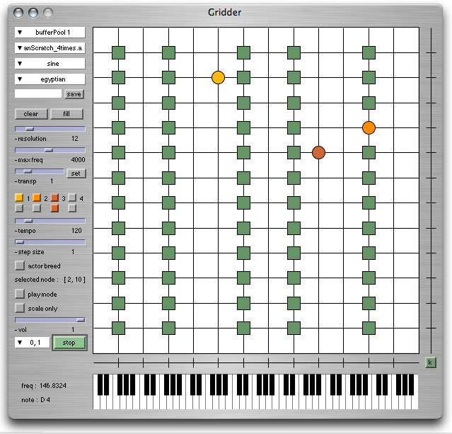

ixiQuarks : Gridder

| Gridder |
The Gridder is an instrument that focuses on micro-tonality
in various ways. It consists of a scaleable grid of nodes (from 5 to 48
squared) which is mapped in equal temperament (implementing the formula
fundamental * 2.pow(i/steps_per_octave)) in octaves (one octave per horizontal
line) but wrapping at a set ceiling frequency. There are 8 different types of synthesized sound that can be selected, and the user can also write his/her own synthesis using code in a special coding window. The nodes can also contain sound samples that are triggered when the node is activated. The piano keyboard view is optional and not graphically connected to the grid itself in any way. It shows the notes played, indicated with grey if the pitch maps to the western 12-tone scale but red if it is a microtone. The interactive attributes (related to playing) of the instrument consist of a space where one can play scales or notes with the mouse, the Wacom pen or any other interface. There are two types of playing: free playing, where the player can play any note on the grid; and restricted playing, where only the selected notes can be played. That way the instrument can be played as a customly tuned string instrument. Related projects are Spiegel and Hunt [5, 14]. The interface also contains 4 agents that can move through the grid-space, each with its own tempo and step size properties. If the agent lands on a selected node, it triggers the assigned action (playing a synthesised note or triggering a sample). The agents also have a mode where they breed notes (by selecting it) if they mate. |